Завтраки — 15 блюд
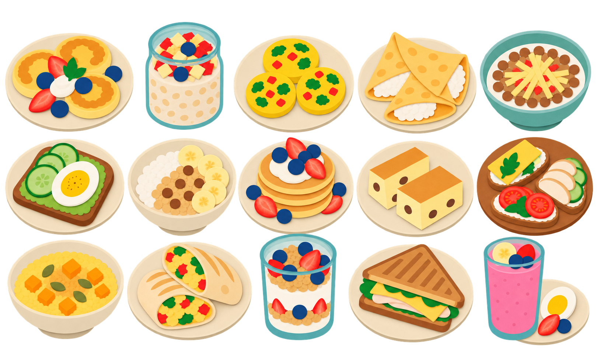
1620 × 971 · RGBA
menu-breakfasts-15.png
Обеды — 15 блюд
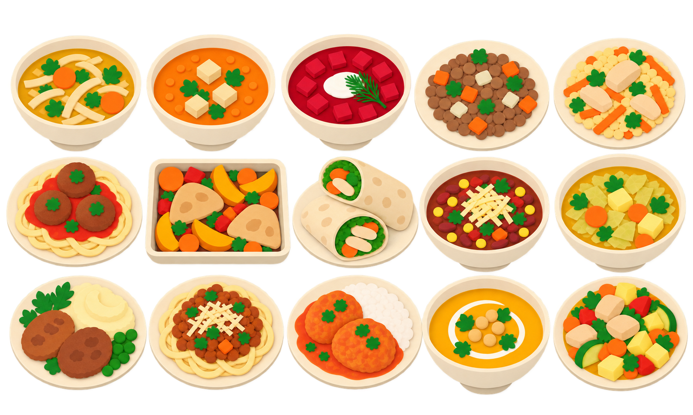
1619 × 971 · RGBA
menu-lunches-15.png
Ужины — 15 блюд
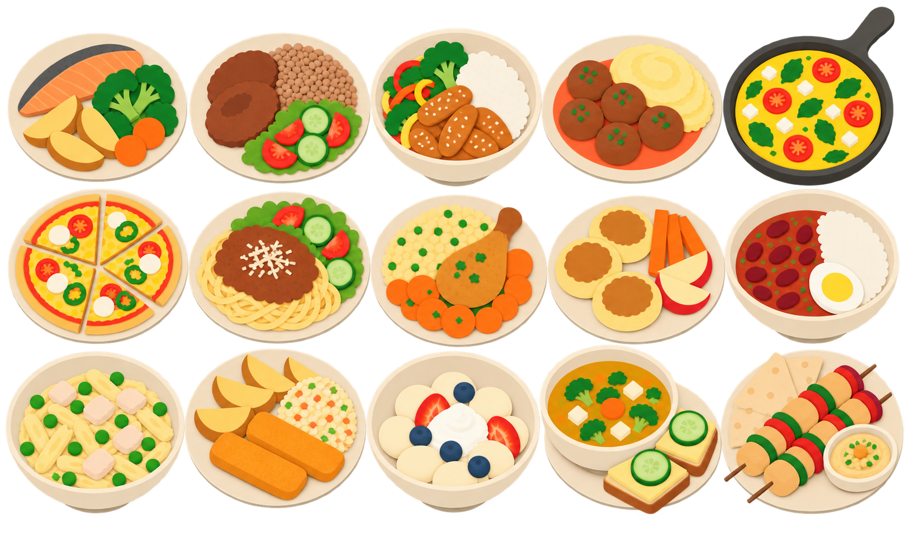
1619 × 971 · RGBA
menu-dinners-15.png
Облачка — 8 пустых
1774 × 887 · RGBA
speech-bubbles-08.png
Тарелка из трёх частей
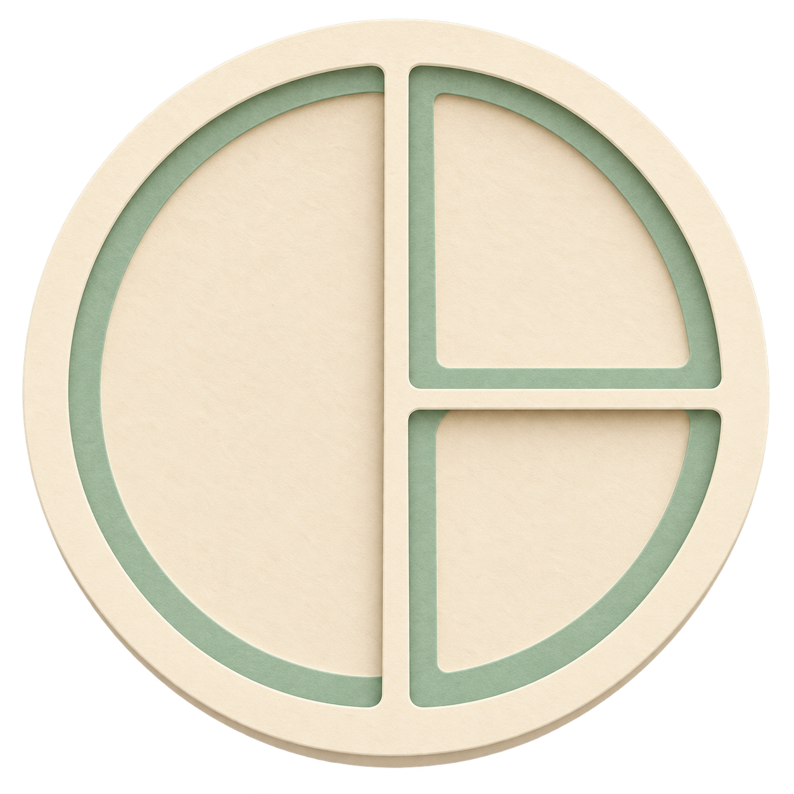
1254 × 1254 · RGBA · ниже заданного разрешения
plate-three-parts-large.png
Солнце и луна
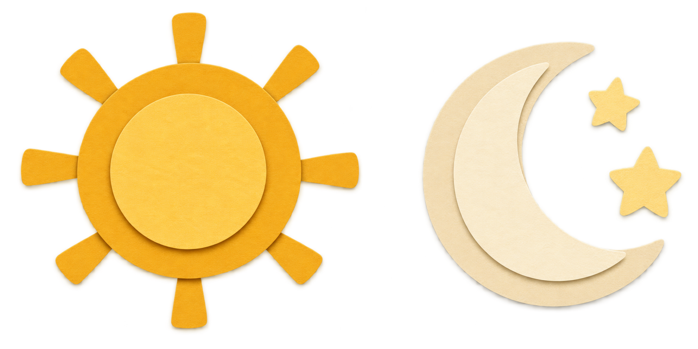
1774 × 887 · RGBA · ниже заданного разрешения
sun-moon-large.png
Еда для тарелки — 10 групп
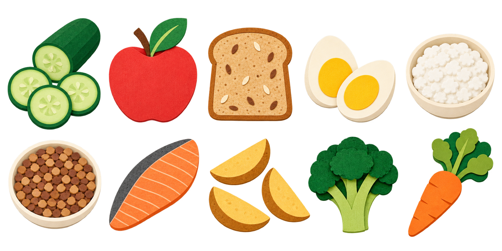
1774 × 887 · RGBA · ниже заданного разрешения
plate-food-large-10.png
Тост и сомнение — 6 поз
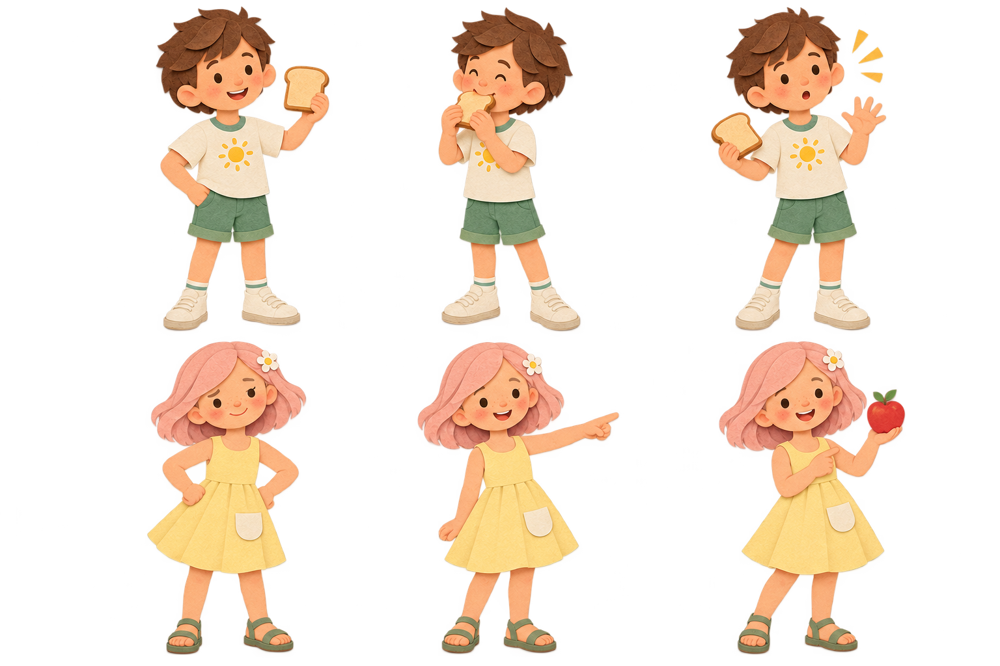
1536 × 1024 · RGBA
boy-toast-girl-doubt.png
Эмоции — 8 портретов
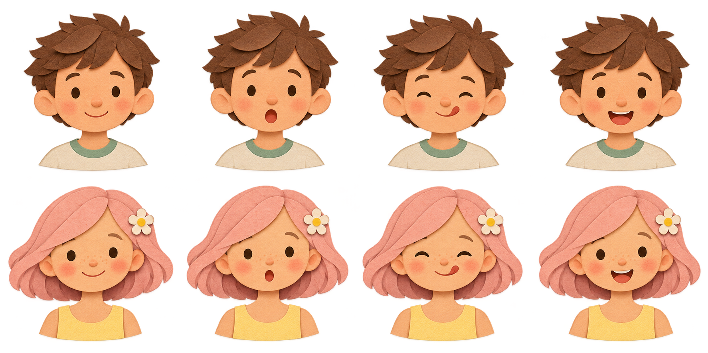
1774 × 887 · RGBA
heads-expressions-08.png
Перекусы и напитки — 10 групп
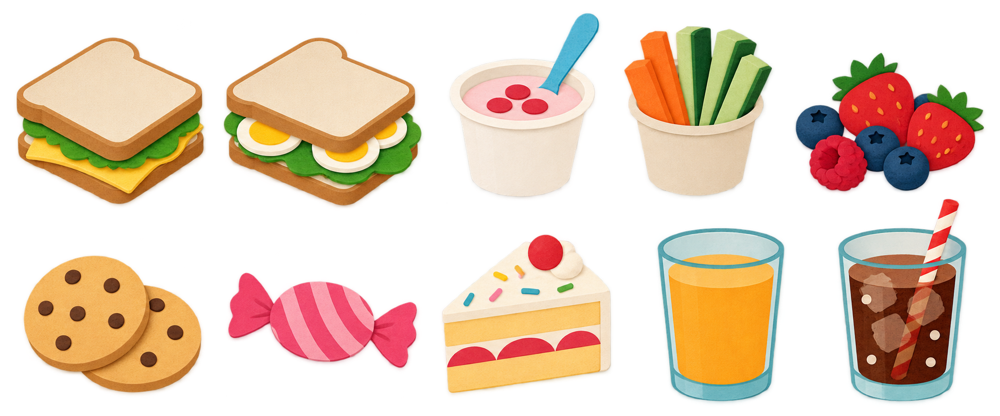
1944 × 809 · RGBA
snacks-drinks-10.png
Пустой ланч-бокс сверху
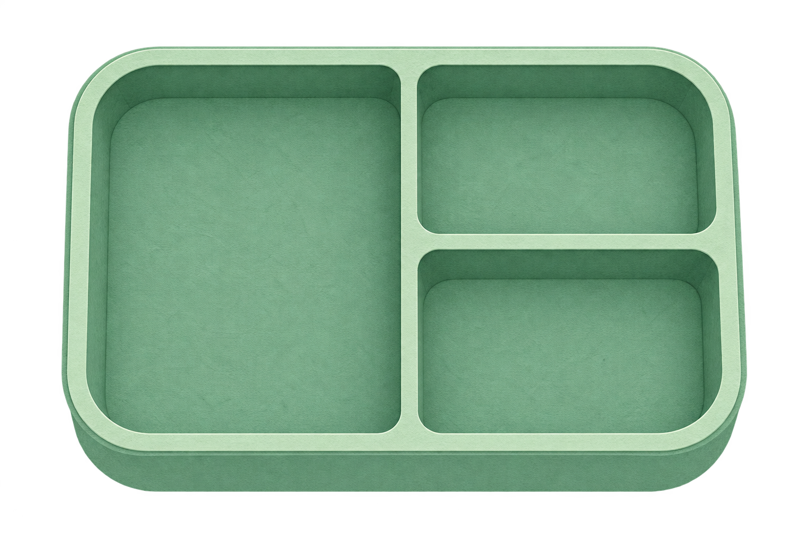
1536 × 1024 · RGBA · ниже заданного разрешения
lunchbox-top-large.png
Бумажная скатерть
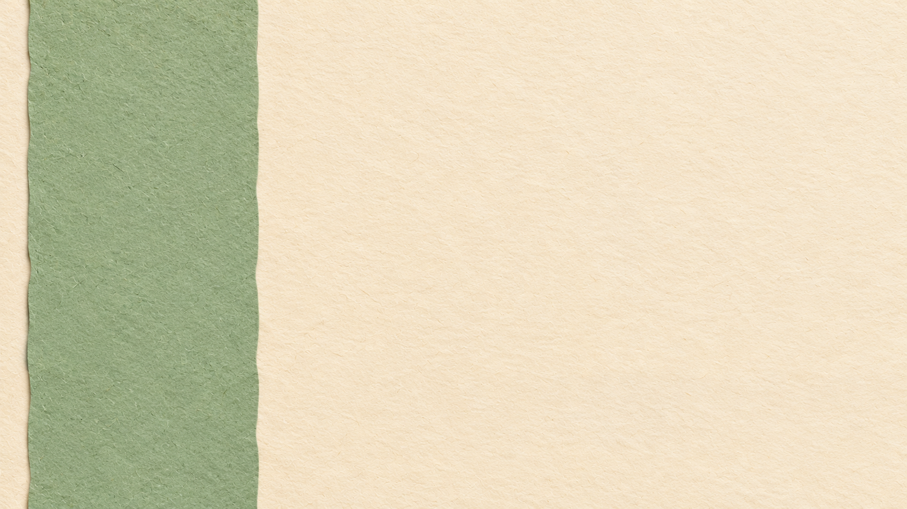
1672 × 941 · RGB · ниже заданного разрешения
table-top-cloth.png
Тёплая столовая
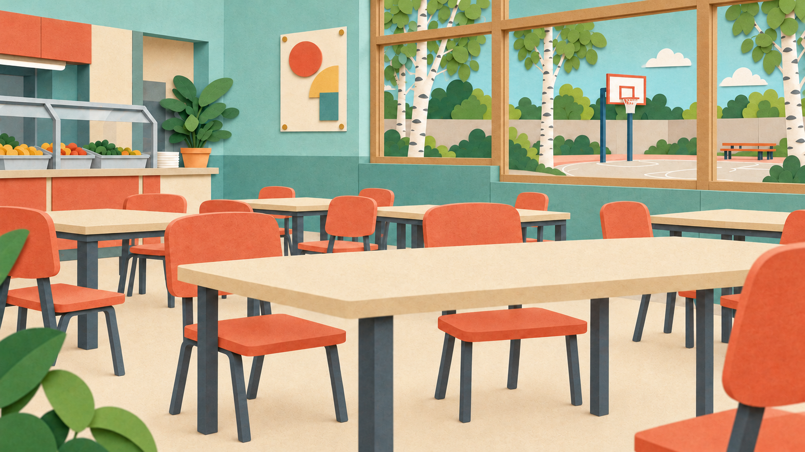
1672 × 941 · RGB
world-03-canteen-warm.png
Тёплая вечерняя кухня
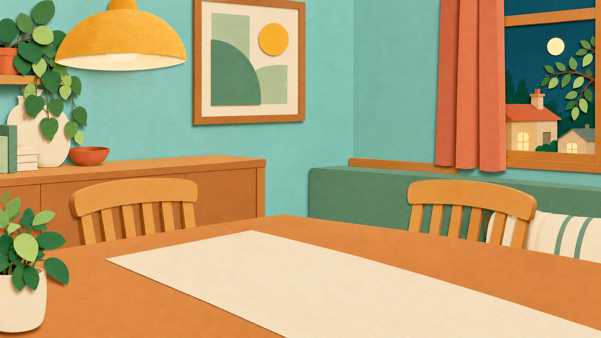
1672 × 941 · RGB
world-05-kitchen-evening-warm.png